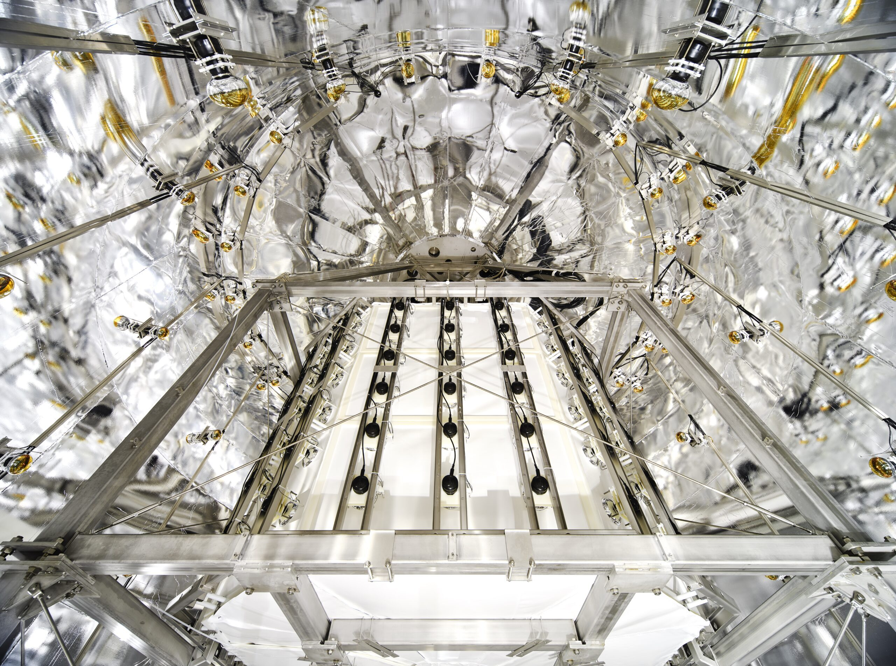

Courrier 009: XENONnT実験が太陽ニュートリノによる原子核反跳を観測


Credit: XENON Collaboration https://xenonexperiment.org/photos/
ダークマターに関する国際会議IDM2024において、XENONnT実験が太陽ニュートリノによる原子核反跳を観測したという報告がありました。
- スライド: IDM 2024 (8-July 12, 2024): New results from XENONnT · Agenda (Indico)
- XENONnTのWebサイト記事: First measurement of a nuclear recoil signal from solar neutrinos with XENONnT – XENONnT experiment
ただし統計的な有意性は2.7σで、素粒子物理学においてよく有意とされる3σや、発見とされる5σには到達していません。今後はより統計を溜めて論文として報告されるものと思われます。
今回報告されたのは、太陽から来る8Bニュートリノがイタリアのグランサッソ山の地下にあるXENONnT検出器中のキセノン原子核とぶつかった信号を捉えたというものです。 太陽ニュートリノは既に様々な検出器で観測されていますが、この原子核反跳 (nuclear recoil) を観測したというのが新しい点です。 ニュートリノが原子核を反跳するような事象は coherent elastic neutrino nucleus scattering (CE𝜈NS, CEvNS: セヴンス) と呼ばれ、これまでは原子炉ニュートリノを使った COHERENT 実験でしか見つかっていませんでした。CE𝜈NSについては以下の記事でも解説しています。
今回の XENONnT の報告は初の太陽ニュートリノによる CE𝜈NS の観測であるとともに、ダークマター探索にとっても重要な意味を持ちます。 上記の記事でも書いたように、XENONnT のような検出器では CE𝜈NS による信号とダークマターによる原子核反跳による信号が区別できません。 これまではダークマターによる信号は太陽ニュートリノによる信号よりも多いかもしれないという淡い期待も持つことができましたが、今後はそれも許されなくなります。 ダークマターによる信号は太陽ニュートリノよりも少ないため、埋もれてしまうことになります。
しかし、ダークマターの信号を捉える手段はまだ残されています。 XENONnT のような入射粒子の方向を区別できない検出器では、1年を通じてダークマターと地球の相対速度が変わることによる季節変動を観測するという手段があります。 これを行うには検出器を1年を通じて安定的に稼動させ、辛抱強く統計を溜める必要があります。 また、入射粒子の方向に感度を持つ検出器を利用するという方法も考えられます。 この場合は太陽の方向からの信号を除くことで、太陽ニュートリノとダークマターの信号を区別できますが、XENONnTのようなタイプの検出器と比べると感度はまだまだ低い状況です。
XENONnTのWebサイトにあるように、今回の報告によりダークマター探索は新しいチャプターを迎えました。
Moreover, such a significant result opens a new chapter in the direct dark matter detection field:
今後少なくとも数年はダークマターが発見されることはないことが確定しましたが、1 太陽ニュートリノによる CE𝜈NS の観測は、人類が着実に歩みを進めていることを示す結果でもあります。
XENONnT や世界中の数多あるダークマター探索実験からの報告を引き続き待ちましょう。
関連リンク
- First measurement of a nuclear recoil signal from solar neutrinos with XENONnT
- XENONnT実験での太陽ニュートリノによる原子核散乱事象の測定結果 - 東京大学宇宙線研究所附属神岡宇宙素粒子研究施設
- 【研究成果】XENONnT実験での太陽ニュートリノによる原子核散乱事象の測定結果 - 名古屋大学 素粒子宇宙起源研究所（KMI）
- CERCANDO LA MATERIA OSCURA, L’ESPERIMENTO XENONnT ENTRA PER LA PRIMA VOLTA NELLA NEBBIA DI NEUTRINI
XENONnT is the first experiment to measure nuclear recoils from solar neutrinos
Today, July 10, at the #IDM2024 in L’Aquila (IT), Fei Gao, from Tsingua Universitiy, reported this result: we can say that XENONnT enters into the so-called “neutrino fog”.This is a great achievement! pic.twitter.com/I3N4yxafo5— XENONexperiment (@XENONexperiment) July 10, 2024
今回の結果はエネルギーの低い太陽ニュートリノによるキセノン原子核反跳という事で、軽い数GeV暗黒物質の探索にしか邪魔にならない。本丸の重い暗黒物質の探索の邪魔になるのはエネルギーの高い大気ニュートリノによる反跳だが、あと一桁大きい検出器を作った時に問題になってくる。まだ前哨戦。
— Yoshitaka Itow (@profjpyitow) July 11, 2024
XENONnT have detected solar neutrinos… the neutrino fog has arrived pic.twitter.com/nwyfjg2IKd
— Ciaran O'Hare (@cajohare) July 10, 2024
Breaking news: the XENONnT experiment seems to have detected particles at 2.7 sigma confidence! But it's not dark matter, it's Solar 8^B neutrinos. Are DM detectors already turning into neutrino detectors? From IDM-2024 conference, Aquila, Italy. pic.twitter.com/2ZrutvNnhz
— Federico Lelli (@lellifede) July 10, 2024</blockquote>
-
XENONグループのコラボレーターの1人である名古屋大学の伊藤さんによれば、現時点では太陽ニュートリノの事象は数GeVの質量のダークマターの邪魔にはなりますが、それより大きい質量のダークマターの場合はまだ邪魔にならないとのことです。 https://x.com/profjpyitow/status/1811259300053950571 ↩